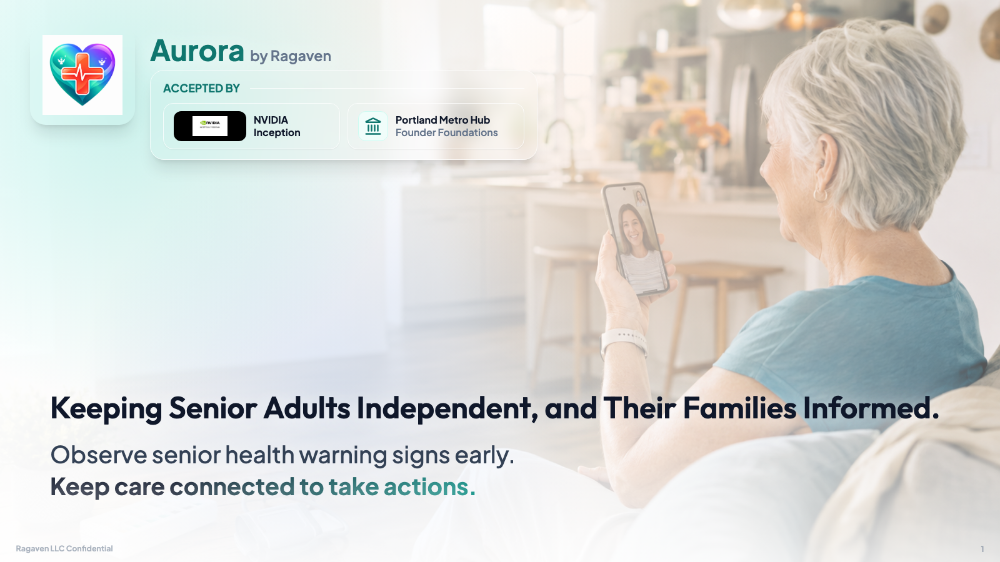

Star shares daily signals
Vitals, labs, meds, visits, notes, and trends.
Trusted care circle
The Star stays independent. Angels stay informed.
Aurora turns everyday senior health signals into care intelligence the circle of care can understand and act on.
Aurora spots meaningful change
Signals are assessed against the Star's profile and history.
Trusted Angels know when to act
Family and caregivers get care alerts when help is needed.

Caregiver
Trusted Angel

Son / Daughter
Trusted Angel

Star
Senior adult
Daily signals become care action
One view. Shared trust. Clear next steps.
Feature clip
Aurora in one minute.
A short narrated walkthrough shows how Aurora turns mobile-device signals into care intelligence, trusted Angel alerts, and proactive action.
Why Aurora
Care changes faster than families can see.
♥
Health warning signs
Daily vitals, labs, medications, symptoms, visits, and trends are usually scattered.
◎
Care intelligence
Aurora connects those signals to baseline drift, risk severity, and care action.
☏
Trusted Angels
Family and caregivers get updates and alerts when help is needed.
How Aurora works
From scattered signals to useful care action.
Aurora connects what families already capture into a daily care picture that can be shared, watched, and acted on.
Capture
Vitals, labs, medications, symptoms, appointments, and trends.
Assess
Aurora Intelligence Engine looks for baseline drift and risk severity.
Guide
Trusted Angels receive care alerts so the next step is clear.
Beta signal
Early users already understand the value.
“Voice-triggered help stands out for Stars who cannot move.”
“Mobile-device vitals make daily capture convenient.”
“Trends and risk analysis feel innovative.”